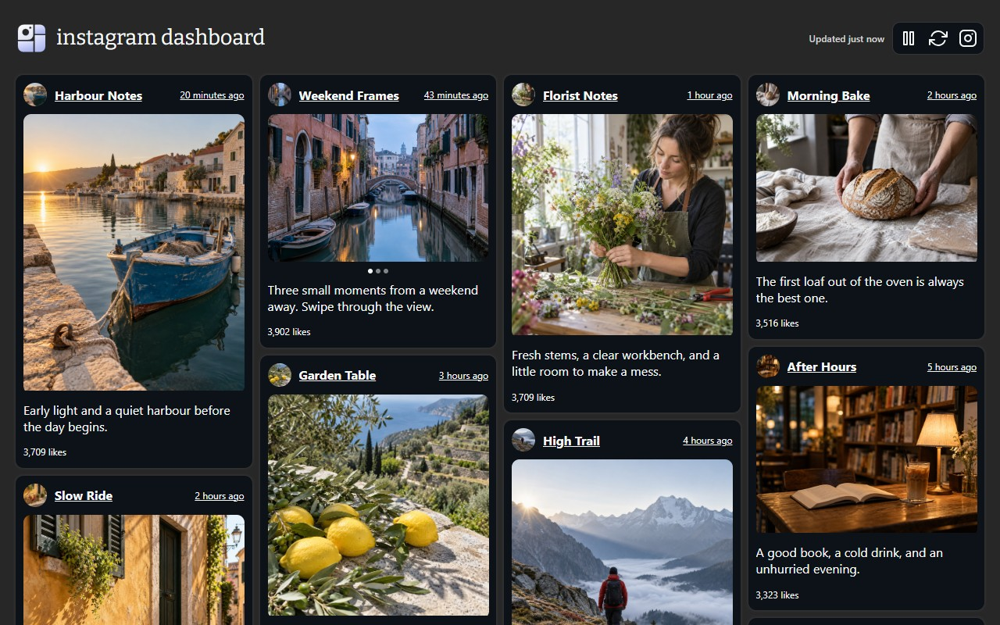
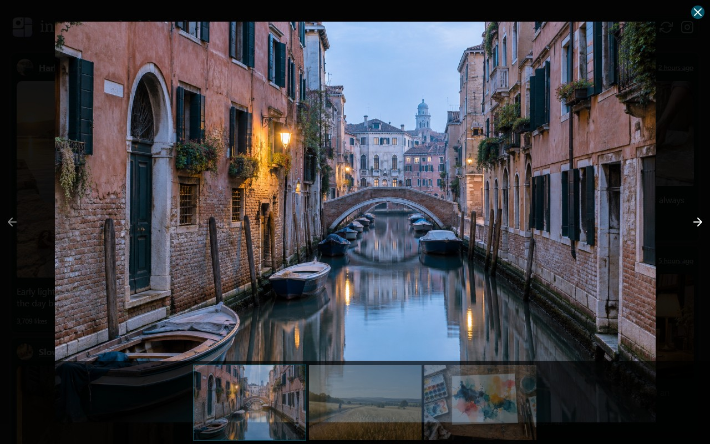

A feed that fits your screen.
A responsive grid puts posts side by side and adapts to your window. Give that desktop display something worth displaying.
Turn your feed into a full-screen dashboard.
More moments in view. Less scrolling in between.
Free browser extension Available for Chrome

Less friction. More feed.
A responsive grid puts posts side by side and adapts to your window. Give that desktop display something worth displaying.
Your feed refreshes automatically every minute. Pause it when you want to linger, or refresh manually whenever you're ready.
Open original posts or copy a link when you find something worth keeping or sharing.

One moment. Full focus.
Select a photo, video, or carousel to open the full-screen viewer. Move through the media and take in the details.
Make space for your feedYour feed, opened up.
Add Instagram Dashboard from the Chrome Web Store, then open your feed in a whole new way.
Add to ChromeYes. The extension uses your existing signed-in Instagram session to load your home feed. You do not need a separate dashboard account or an Instagram API key.
Yes. You can install Instagram Dashboard for free from the Chrome Web Store.
Try reloading Instagram first. Instagram can change its internal endpoints or navigation, so an extension update may sometimes be needed.